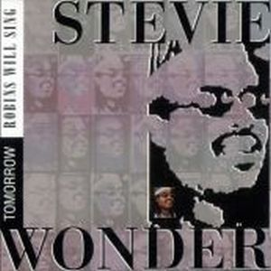

La demora en la realización de nuevos álbumes por parte de Stevie Wonder es cada vez más angustiosa, 4 años desde Jungle Fever. En un primer momento este nuevo álbum iba a llamarse Conversation Piece, pero finalmente se publicó como Conversation Peace. Muchos de los temas fueron compuestos durante su estancia en Ghana y muy preocupado por asuntos como la violencia callejera y el racismo.
Tiene colaboraciones importantes como una versión con Prince a la guitarra en "Cold Chill", Anita Baker en un bonito jazzy funk en la canción
"Sensuous Whisper", o Take 6 y Deniece Williams en "I'm New". Consiguió dos premios premios Grammy por la canción
"For Your Love" por mejor interpretación vocal masculina de R&B, y mejor canción de R&B.
